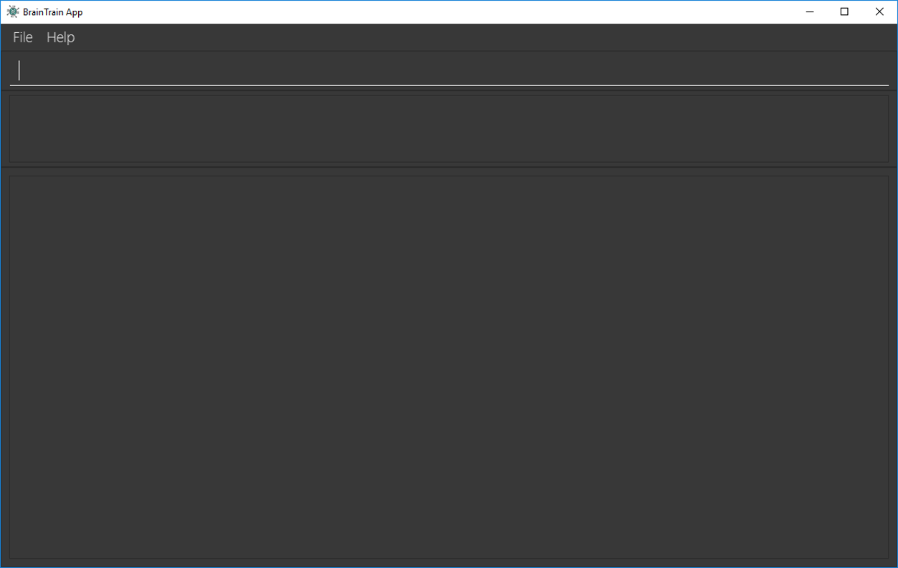

By: Team BrainTrain Since: Jan 2019 Licence: MIT
- 1. Introduction
- 2. Quick Start
- 3. Features
- 3.1. Management mode
- 3.1.1. Viewing help:
help - 3.1.2. Starting a quiz session:
start - 3.1.3. Listing all lessons:
listLessons - 3.1.4. Adding a lesson:
addLesson - 3.1.5. Deleting a lesson:
deleteLesson - 3.1.6. Reloading all lessons:
reloadLessons - 3.1.7. Opening a lesson:
openLesson - 3.1.8. Closing a lesson:
closeLesson - 3.1.9. Listing all flashcards:
listCards - 3.1.10. Adding a flashcard:
addCard - 3.1.11. Deleting a flashcard:
deleteCard - 3.1.12. Listing entered commands :
history - 3.1.13. Quitting the program :
quit
- 3.1.1. Viewing help:
- 3.2. Quiz mode
- 3.1. Management mode
- 4. Troubleshooting
- 5. FAQ
- 6. Command Summary
1. Introduction
BrainTrain is an open-source spaced repetition flashcard application which makes memorizing easy and efficient. Research has shown that the Spaced-Repetition System (SRS) is much more effective than traditional memorization techniques. With BrainTrain, you will learn more with less time.
BrainTrain is also a portable and easy-to-navigate desktop program. It is an offline application which you can use anywhere, even in places with limited or no Internet availability. It can be navigated and used via easy-to-use commands through the Command Line Interface (CLI). The CLI is supplemented by a minimalistic Graphical User Interface (GUI) which provides helpful but non-distracting visual aid. Together, the CLI and GUI provides an effective and straightforward way for you to use BrainTrain.
Start using BrainTrain today! To get started, read [Section 2, “Quick Start”] for installation and setup instructions.
2. Quick Start
To begin using BrainTrain, follow the following set of instructions:
-
Ensure that Java version
9or later is installed on your Computer. You can download it here. -
Download the latest
braintrain.jarfile here. -
Create a folder to use as the home folder for BrainTrain (e.g.
braintrain/). -
Move the downloaded file to the created folder.
-
Double-click the file to run BrainTrain. The GUI will appear in a few seconds.
Figure 1. BrainTrain’s GUI on first run -
Type the command
helpin the command box and press Enter to find out how to use BrainTrain commands.
To learn more about BrainTrain commands, carry on to [Section 3, “Features”].
3. Features
Command Format
-
Words in
UPPER_CASEare parameter values which you need to specify in order for the commands to work. For example, fordeleteCard INDEX,INDEXis a parameter you have to specify. -
Parameters with trailing
…can be specified multiple times. For example, for theaddLesson n/NAME q/QUESTION CORE a/ANSWER CORE [c/CORE]… [o/OPTIONAL]…command, you can specify as manyCOREvalues as you need to. On the other hand, you can only specify exactly 1QUESTION COREvalue. -
Parameters in
[ ]brackets are optional. For example, for theaddCard c/CORE c/CORE [c/CORE]… [o/OPTIONAL]…command, you have to specify at least 2COREvalues, but you can optionally specify more than 2COREvalues or 0 or moreOPTIONALvalues. -
Parameters can be entered in any order. For example, for
addCard c/CORE c/CORE [c/CORE]… [o/OPTIONAL]…, you can use the command as suchaddCard o/Country Code c/Country c/Capital.
3.1. Management mode
3.1.1. Viewing help: help
Displays usage information on all commands.
Format: help
| Alternatively, press F1 to display usage information on all commands. |
3.1.2. Starting a quiz session: start
Starts a new quiz session.
Format: start n/NAME [c/COUNT] m/MODE
Usage rules:
-
You can optionally specify the
COUNTparameter.COUNTsets the number of cards to be tested in the quiz session. If noCOUNTis specified, by default 1 card is tested. -
The name field is used to choose lesson.
-
You must specify
MODE.MODEsets the testing mode of the quiz session. The three available modes areLEARN,PREVIEW,REVIEWandDIFFICULT.-
LEARN: Displays new cards with both question and answer shown, before testing begins and only question or answer are shown. -
PREVIEW: Displays both question and answer of all flashcards. You will not be tested. -
REVIEW: Tests the words based on the spaced-repetition algorithm - flashcards with the earliest test date are tested first. -
DIFFICULT: Displays cards you previously labelled as difficult with both question and answer shown. You will not be tested.
-
|
Flashcards are tested based on the Space-Repetition technique. |
Examples:
-
start n/country-capitals m/LEARN
Starts a quiz inLEARNmode with the 'country-capitals' lesson. -
start n/country-capitals-asia c/20 m/PREVIEW
Starts a quiz containing 20 cards inPREVIEWmode with the 'country-capitals-asia' lesson.
3.1.3. Listing all lessons: listLessons
Displays a numbered list of all lessons.
Format: listLessons
3.1.4. Adding a lesson: addLesson
Adds a lesson.
Format: addLesson n/NAME q/QUESTION CORE a/ANSWER CORE [c/CORE]… [o/OPTIONAL]…
Usage rules:
-
You must specify
QUESTION COREandANSWER CORE.QUESTION COREandANSWER COREsets theCOREheaders describing the question and answerCOREvalues of flashcards added to this lesson.-
For example, a lesson for memorising the capitals of countries will have the
QUESTION COREset as "Country" andANSWER_COREset as "Capital".
-
-
You can optionally specify 0 or more additional
COREheaders (e.g. "Language"), which can be set as theQUESTION COREandANSWER COREby using the commandeditLesson. -
You can only add flashcards which have
QUESTION CORE,ANSWER COREandCOREvalues which correspond to the lesson’sCOREheaders. -
You can optionally specify 0 or more
OPTIONALvalues (e.g. "Hint").-
Flash cards added to the lesson need not have corresponding
OPTIONALvalues. -
OPTIONALvalues are displayed during quiz mode when you enter\hint.
-
Examples:
-
addLesson n/Upper limb anatomy q/Statement a/TrueOrFalse -
addLesson n/Capitals of the world q/Country a/Capital c/Language o/Hint
3.1.5. Deleting a lesson: deleteLesson
Deletes a lesson by referencing its index in the numbered lesson list.
Format: deleteLesson INDEX
Usage rules:
-
To view the list, enter the command
listLessons. -
You must specify the
INDEXof the lesson in the numbered lesson list.
|
You have to open a lesson before you can use the following commands: |
Examples:
-
deleteLesson 2
Deletes the second lesson in the numbered list displayed bylistLessons.
3.1.6. Reloading all lessons: reloadLessons
Reloads all lessons from the hard disk including all newly added lesson .csv files which were directly moved into the data folder.
Format: reloadLessons
3.1.7. Opening a lesson: openLesson
Opens a lesson from the numbered lesson list so you can edit the lesson and its flash cards.
Format: openLesson INDEX
Usage rules:
-
To view the lesson list, enter the command
listLessons. -
You must specify the
INDEXof the lesson in the numbered lesson list.
Examples:
-
openLesson 1
Opens the first lesson in the numbered list.
3.1.8. Closing a lesson: closeLesson
Closes and saves changes made to the opened lesson.
Format: closeLesson
Usage rule:
To open a lesson, enter the command openLessons.
|
Changes made to the opened lesson through the commands: |
3.1.9. Listing all flashcards: listCards
Displays a numbered list of all flashcards in the opened lesson.
Format: listCards
Usage rule:
To open a lesson, enter the command openLesson.
3.1.10. Adding a flashcard: addCard
Adds a flashcard to the opened lesson.
Format: addCard c/CORE c/CORE [c/CORE]… [o/OPTIONAL]…
Usage rules:
-
To open a lesson, enter the command
openLesson. -
You must specify at least 2
COREvalues. This is because a flashcard needs at least 2 values to be testable. -
You can optionally specify 0 or more additional
COREvalues. -
You can optionally specify 0 or more
OPTIONALvalues.
You can only add flashcards to the opened lesson if the flashcards have CORE values which corresponds to the lesson’s CORE headers.
Examples:
-
addCard c/Stapes is the smallest bone in the body c/True -
addCard c/Australia c/Canberra c/English o/Starts with C
3.1.11. Deleting a flashcard: deleteCard
Deletes a flashcard by referencing its index in the numbered flashcard list.
Format: deleteCard INDEX
Usage rules:
-
To view the list, enter the command
listCards. -
Deletes the flashcard at the specified
INDEXof the numbered flashcard list.
Examples:
-
deleteCard 2
Deletes the second flashcard.
3.1.12. Listing entered commands : history
Lists all the commands that you have entered in reverse chronological order.
Format: history
|
Pressing the ↑ and ↓ arrows will display the previous and next input respectively in the command box. |
3.2. Quiz mode
When you start a quiz session, you will enter quiz mode in which only the following set of quiz commands are allowed. Management commands are disabled in this mode.
3.2.1. Viewing help: \help
Displays usage information on all quiz mode commands and acceptable inputs for answering cards.
Format: \help
3.2.2. Viewing the quiz session’s status: \status
Displays information on the current session’s status such as lesson progress (i.e. number of flashcards left).
Format: \status
3.2.3. Answering a flashcard : [*]
Any input without the escape character \ is treated as an answer to the current flashcard.
Format: [*]
-
For each flashcard, total attempts and answer streak is tracked.
-
Total attempts is the number of times you have attempted this flashcard, regardless of whether you were correct or wrong.
-
The answer streak is the number of times you have answered the flashcard correctly consecutively.
| The streak will be reduced to 0 after you answer a flashcard wrongly twice in a row. Hence, if you accidentally enter the wrong answer once, your streak for the question will not be affected, unless you answer wrongly again. |
| If you do not know the answer of a flashcard and want to view it, simply press ENTER twice. |
Examples:
-
The question is "Japan" and is asking for the capital of "Japan":
Tokyo
This is the correct answer, both the streak and total attempts increased by 1. -
The question is "Tokyo" and is asking for the country of "Tokyo":
Japaan
Japan
This is the correct answer, the streak increased by 1 while total attempts increased by 2. -
The question is "Tokyo" and is asking for the country of "Tokyo":
Japaan
Jappan
This is the wrong answer, the streak is reduced to 0 while total attempts increased by 2.
3.2.4. Labelling the current flashcard as difficult: \difficult
Labels the current flashcard as difficult.
Format: \difficult
Examples:
-
The question is "Japan" and is asking for the capital of "Japan":
\difficult
This will label flashcard of "Japan" as difficult. -
The question is "Japan" and is asking for the capital of "Japan":
\difficult
\difficult
This will label flashcard of "Japan" as not difficult.
3.2.5. Viewing the current flashcard’s hint(s): \hint
Reveals the hint(s) for the current flashcard (if any).
Format: \hint
3.2.6. Quitting the quiz session: \quit
Quits the current quiz session and switches back to management mode.
Format: \quit
4. Troubleshooting
Q: Why are my card values shown as ??????
A: If your lesson contains non-ASCII characters such as:
-
Characters with accents:
à -
Non-English words :
こんにちはالسلام عليكم你好
This can be fixed by opening the lesson file in your preferred spreadsheet application (e.g. Excel), and then saving it as CSV UTF-8 (Comma delimited) (*.csv).
5. FAQ
Q: How do I transfer my data to another computer?
A: Install the app in the other computer and transfer the lesson .csv files over to the /data directory.
6. Command Summary
6.1. Management mode
-
Viewing help:
help -
Starting quiz session:
start n/NAME [c/COUNT] m/MODE
e.g.start n/country-capitals c/15 m/LEARN -
Listing all lessons:
listLessons -
Adding a lesson:
addLesson n/NAME q/QUESTION CORE a/ANSWER CORE [c/CORE]… [o/OPTIONAL]…
e.g.addLesson n/Capitals of the world q/Country a/Capital c/Language o/Hint -
Deleting a lesson:
deleteLesson INDEX
e.g.deleteLesson 2 -
Reloading all lessons:
reloadLessons -
Opening a lesson:
openLesson INDEX
e.g.openLesson 1 -
Closing a lesson:
closeLesson -
Listing all flashcards:
listCards -
Adding a flashcard:
c/CORE c/CORE [c/CORE]… [o/OPTIONAL]…
e.g.addCard c/Australia c/Canberra c/English o/Starts with C -
Deleting a flashcard:
deleteCard INDEX
e.g.deleteCard 2 -
Listing entered commands:
history -
Quiting the program:
quit
6.2. Quiz mode
-
Viewing help:
\help -
Viewing the quiz session’s status:
\status -
Answering a flashcard:
[*] -
Labelling the current flashcard as difficult:
\difficult -
Viewing the current flashcard’s hint(s):
\hint -
Quitting the quiz session:
\quit